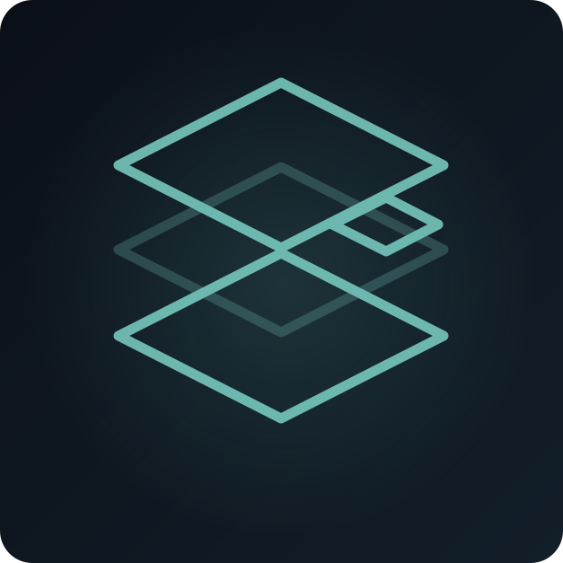

Ce qui casseÉrosion du savoir · Perte de savoir tacite · Point de défaillance unique · Défaillance de mémoire institutionnelle

SCN-009 · Érosion du savoir
L’expert prend sa retraite vendredi.
Trente ans de jugement ne devraient pas quitter l’organisation dans une seule boîte.
ÉchelleOrganisation
UrgenceImportante
Déficit de coordinationÉlevé
EnjeuxSécurité · Qualité des services · Continuité
Érosion du savoirPerte de savoir tacitePoint de défaillance uniqueDéfaillance de mémoire institutionnelle
Ce que Koali change
← Retour à la mosaïque complèteKoali capture la capacité à travers des cas réels : décisions, preuves, exceptions, approches ratées, conditions et résultats. Le savoir est rattaché au travail pendant que l’expert pratique encore, pas extrait dans une seule entrevue finale.
Qui détient une partie du savoir
praticiens de première ligne • experts du domaine • décideurs
Réponse Koali
Koali capture la capacité à travers des cas réels : décisions, preuves, exceptions, approches ratées, conditions et résultats. Le savoir est rattaché au travail pendant que l’expert pratique encore, pas extrait dans une seule entrevue finale.
Cas réels semblables
- Gestion des connaissances nucléaires — AIEA
- Systèmes informatiques patrimoniaux critiques — U.S. GAO
À quoi ressemble le succès
L’état pertinent reste visible à travers les transferts et le temps. • Responsabilités, questions non résolues et voies d’escalade sont explicites.
Les cas documentés montrent que le mécanisme de défaillance existe; ils ne prétendent pas que Koali aurait changé une issue particulière.
Le problème
Une personne expérimentée sait pourquoi les procédures existent, quelles exceptions comptent, quels symptômes trompent et qui appeler quand le manuel ne suffit pas. Un document de relève capture les tâches, rarement le jugement.
Ce qui casse
- Érosion du savoir
- Perte de savoir tacite
- Point de défaillance unique
- Défaillance de mémoire institutionnelle
Qui détient une partie du savoir
- praticiens de première ligne
- experts du domaine
- décideurs
- personnes touchées
Avec Koali
Koali capture la capacité à travers des cas réels : décisions, preuves, exceptions, approches ratées, conditions et résultats. Le savoir est rattaché au travail pendant que l’expert pratique encore, pas extrait dans une seule entrevue finale.
Autorité humaine
Les humains et institutions autorisés conservent leurs autorités légales, professionnelles et démocratiques. Koali structure connaissance, coordination et traçabilité; il ne prend pas les décisions souveraines ou professionnelles.
À quoi ressemble le succès
- L’état pertinent reste visible à travers les transferts et le temps.
- Responsabilités, questions non résolues et voies d’escalade sont explicites.
- Le résultat produit une mémoire réutilisable pour le prochain cas comparable.
Cas réels semblables
Gestion des connaissances nucléaires — AIEA
L’AIEA traite la retraite et la perte de savoir critique comme des risques organisationnels explicites exigeant planification de relève et évaluation de la perte de connaissance.
Relation au scénario: DIRECT
Source: https://www-pub.iaea.org/MTCD/Publications/PDF/Pub1724_web.pdf
Systèmes informatiques patrimoniaux critiques — U.S. GAO
Le GAO a identifié des systèmes patrimoniaux fédéraux critiques âgés de 8 à 51 ans, avec langages dépassés, technologies non supportées et vulnérabilités connues.
Relation au scénario: MOTIF LIÉ
Source: https://www.gao.gov/products/gao-19-471
Limites
Les cas documentés illustrent des mécanismes de défaillance analogues. Ils n’établissent pas que Koali aurait empêché l’événement ou garanti une autre issue.
Boucle Koali
signaux → sens partagé → preuves → choix → responsabilité → action → vérification → mémoire → meilleure connaissance